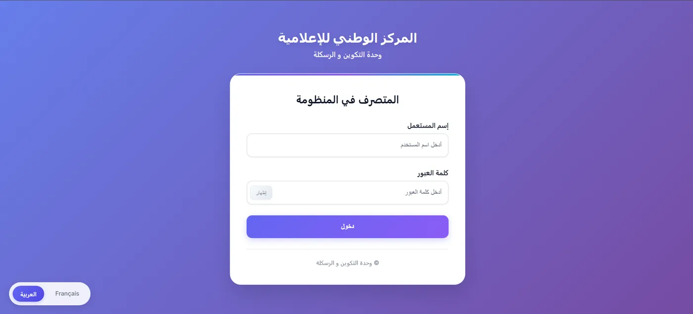
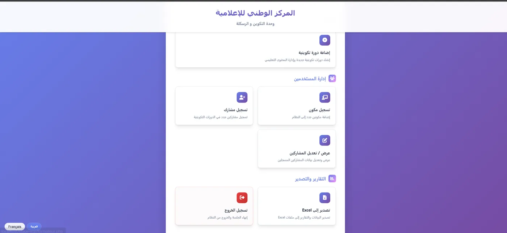
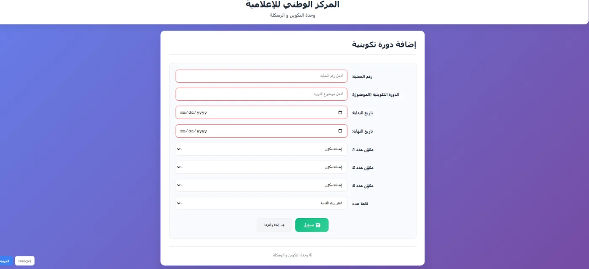

Application web de gestion des formations
Training management web application
Une application qui remplace les fichiers bureautiques dispersés de l'unité de formation du CNI : formateurs, cycles et participants gérés au même endroit, derrière une connexion sécurisée.
An application that replaces the scattered office files of the CNI training unit: trainers, training cycles and participants managed in one place, behind a secure login.
Papier et fichiers dispersésPaper and scattered files
- Temps perdu à chercher et à ressaisir les informations.
- Données dupliquées et incohérentes, erreurs de saisie.
- Suivi difficile des participants et des cycles de formation.
- Time lost searching for and re-entering information.
- Duplicated and inconsistent data, input errors.
- Participants and training cycles hard to track.
Ce que fait l'applicationWhat the application does
- Authentification de l'administrateur.
- Gestion des formateurs, des cycles de formation et des participants : ajout, modification, suppression, recherche.
- Import de données depuis Excel et export des listes de participants.
- Interface bilingue arabe (droite à gauche) et français, adaptée au mobile.
- Administrator authentication.
- Management of trainers, training cycles and participants: add, edit, delete, search.
- Data import from Excel and export of participant lists.
- Bilingual Arabic (right-to-left) and French interface, responsive.
Architecture en trois couchesThree-tier architecture
PrésentationPresentation
Formulaires et listes en HTML5 / CSS3 : saisie, affichage et navigation entre les modules.
Forms and lists in HTML5 / CSS3: input, display and navigation between modules.
Logique métierBusiness logic
PHP : authentification, vérifications, règles de gestion et échanges avec la base de données.
PHP: authentication, validation, business rules and exchanges with the database.
DonnéesData
MySQL : tables utilisateurs, formateurs, cycles et participants, avec contrôle de cohérence.
MySQL: users, trainers, cycles and participants tables, with consistency checks.
Méthode : Scrum simplifié en deux sprints. Le premier couvre l'authentification et la gestion des formateurs, le second les cycles et les participants. Chaque sprint s'appuie sur des diagrammes UML (PlantUML) et des maquettes validées avant le développement.
Method: simplified Scrum in two sprints. The first covers authentication and trainer management, the second training cycles and participants. Each sprint relies on UML diagrams (PlantUML) and mock-ups validated before development.
Interfaces



Pistes d'améliorationNext steps
- Module de statistiques et de rapports.
- Notifications par e-mail ou SMS.
- Déploiement en ligne avec plusieurs rôles : administrateur, formateur, participant.
- Statistics and reporting module.
- E-mail or SMS notifications.
- Online deployment with several roles: administrator, trainer, participant.
Voir le projet suivantSee the next project
Smart Hotel : une chambre connectée, de l'ESP32 à l'application mobile.
Smart Hotel: a connected room, from the ESP32 to the mobile app.